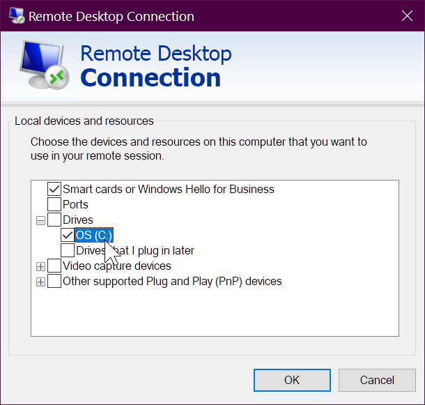

How to best configure and use mstsc.exe - microsoft terminal services client
"remote desktop connection" (mstsc.exe) is very programmable.
In addition to all of the commandline options (see below) you can save your config as a ".rdp" file (and alter the file if you wish) -- and "run" the rdp file, any time.
It's super easy -
Hit 'show options'

...then "save as"

...and save your .rdp file.

-- BUT BEFORE YOU DO THAT -- make sure you've configured it the way you want:

...then save it!
And what does the Default.RDP file look like??? It's plain text and very easy to read!
Here's the content of the file I created in those screenshots....
screen mode id:i:2
use multimon:i:0
desktopwidth:i:1920
desktopheight:i:1080
session bpp:i:32
winposstr:s:0,3,0,0,800,600
compression:i:1
keyboardhook:i:2
audiocapturemode:i:0
videoplaybackmode:i:1
connection type:i:7
networkautodetect:i:1
bandwidthautodetect:i:1
displayconnectionbar:i:1
enableworkspacereconnect:i:0
disable wallpaper:i:0
allow font smoothing:i:0
allow desktop composition:i:0
disable full window drag:i:1
disable menu anims:i:1
disable themes:i:0
disable cursor setting:i:0
bitmapcachepersistenable:i:1
full address:s:yoda-pigsy
audiomode:i:0
redirectprinters:i:1
redirectcomports:i:0
redirectsmartcards:i:1
redirectclipboard:i:1
redirectposdevices:i:0
autoreconnection enabled:i:1
authentication level:i:2
prompt for credentials:i:0
negotiate security layer:i:1
remoteapplicationmode:i:0
alternate shell:s:
shell working directory:s:
gatewayhostname:s:
gatewayusagemethod:i:4
gatewaycredentialssource:i:4
gatewayprofileusagemethod:i:0
promptcredentialonce:i:0
gatewaybrokeringtype:i:0
use redirection server name:i:0
rdgiskdcproxy:i:0
kdcproxyname:s:
username:s:exampleuser
drivestoredirect:s:
Entering a machine-name, username and those settings only influenced three lines in the file:
full address:s:yoda-pigsy
and the last two lines...
username:s:exampleuser
drivestoredirect:s:
The file is so easy to change... if you have a dozen machines you need to remote onto, just generate the files!
Command line options
Here's the full command line options....
[Window Title]
Remote Desktop Connection Usage
[Content]
MSTSC [<connection file>] [/v:<server[:port]>] [/g:<gateway>] [/admin] [/f[ullscreen]] [/w:<width> /h:<height>] [/public] | [/span] [/multimon] [/edit "connection file"] [/restrictedAdmin] [/remoteGuard] [/prompt] [/shadow:<sessionID> [/control] [/noConsentPrompt]]
"connection file" -- Specifies the name of an .RDP file for the connection.
/v:<server[:port]> -- Specifies the remote PC to which you want to connect.
/g:<gateway> -- Specifies the RD Gateway server to use for the connection. This parameter is only read if the endpoint remote PC is specified with /v.
/admin -- Connects you to the session for administering a remote PC.
/f -- Starts Remote Desktop in full-screen mode.
/w:<width> -- Specifies the width of the Remote Desktop window.
/h:<height> -- Specifies the height of the Remote Desktop window.
/public -- Runs Remote Desktop in public mode.
/span -- Matches the remote desktop width and height with the local virtual desktop, spanning across multiple monitors, if necessary. To span across monitors, the monitors must be arranged to form a rectangle.
/multimon -- Configures the Remote Desktop Services session monitor layout to be identical to the current client-side configuration.
/edit -- Opens the specified .RDP connection file for editing.
/restrictedAdmin -- Connects you to the remote PC in Restricted Administration mode. In this mode, credentials won't be sent to the remote PC, which can protect you if you connect to a PC that has been compromised. However, connections made from the remote PC might not be authenticated by other PCs, which might impact application functionality and compatibility. This parameter implies /admin.
/remoteGuard -- Connects your device to a remote device using Remote Guard. Remote Guard prevents credentials from being sent to the remote PC, which can help protect your credentials if you connect to a remote PC that has been compromised. Unlike Restricted Administration mode, Remote Guard also supports connections made from the remote PC by redirecting all requests back to your device.
/prompt -- Prompts you for your credentials when you connect to the remote PC.
/shadow:<sessionID> -- Specifies the ID of the session to shadow.
/control -- Allows control of the session when shadowing.
/noConsentPrompt -- Allows shadowing without user consent.
[OK]